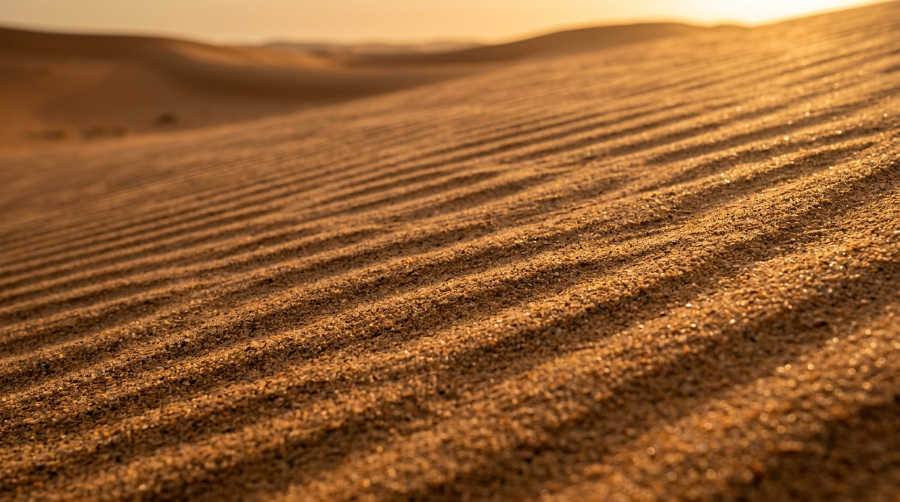

ทะเลทราย
ซาฮาร่า
THE SAHARA
OCEAN OF SCULPTED SILENCE
ผืนทรายกว้างใหญ่กว่า 9 ล้านตารางกิโลเมตร ที่ซึ่งลมสุริยันและกาลเวลาร่วมกันแกะสลักความเวิ้งว้าง ให้กลายเป็นประติมากรรมธรรมชาติอันทรงพลังและสงบนิ่งชั่วนิรันดร์

[ FIG. 02 : AEOLIAN RIPPLES ]
ริ้วคลื่นควอตซ์ละเอียดที่ถูกสายลมจัดเรียง
9,200,000 KM²
ครอบคลุม 11 ประเทศในทวีปแอฟริกาตอนเหนือ ผืนทะเลทรายร้อนที่ใหญ่ที่สุดในโลก
+50°C TO -5°C
การแกว่งตัวของอุณหภูมิสุดขั้ว จากแดดเผาผลาญสู่ความหนาวเย็นยะเยือกยามราตรี